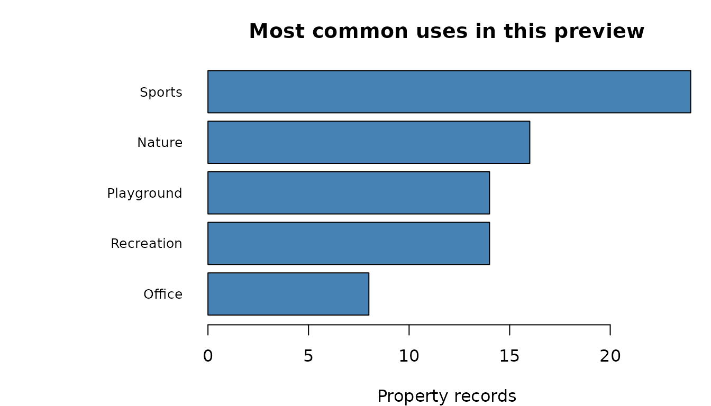

Your First Five Minutes with tampaBayOpenData
Source:vignettes/first-five-minutes.Rmd
first-five-minutes.RmdThis tutorial searches for a public parks dataset, retrieves a small preview, and charts one of its fields in base R. It assumes basic R skills; no mapping software or knowledge of the publisher’s data service is required. Run the commands in order. Searching the package’s catalog works offline; retrieving records needs an internet connection. The publisher can change its data, so your results may differ from another person’s or from a later run. Allow about five minutes, plus installation time if needed.
The examples below use a saved preview of 100 parks property records retrieved on October 24, 2026 (Eastern time). You can use this historical snapshot offline to reproduce the chart, or choose current records from the publisher in step 3. The preview is not necessarily representative of all parks in Tampa or Hillsborough County.
1. Install and load the package
Install the package from CRAN once (this needs an internet connection):
install.packages("tampaBayOpenData")Load it each time you start a new R session:
2. Find a dataset
Search for parks in the package’s checked catalog:
matches <- tbod_search_datasets("parks", source = "checked")
matches[, c("id", "title")]
#> # A tibble: 6 × 2
#> id title
#> <chr> <chr>
#> 1 parks Park polygons
#> 2 hillsborough-parks Hillsborough County parks and recreation properties
#> 3 stpete-parks St. Petersburg parks
#> 4 clearwater-park-buffers Clearwater park buffers
#> 5 pinellas-park-boundaries Pinellas County park boundaries
#> 6 pinellas-trail Pinellas Trail segmentsEach row in these search results points to one dataset, with a title
and an id that you can use to retrieve it.
source = "checked" searches the package’s built-in list of
datasets whose structures have been inspected. This search does not
download park records. Find the hillsborough-parks row;
that is the ID we will use for the rest of this tutorial. The list can
grow when the package is updated.
3. Choose your parks data
Run one of the following options. Both create a table called
parks, so steps 4 and 5 work the same way with either
source.
Option A — Use saved example data (recommended for beginners)
Load the preview included with the installed package. Once the package is installed, this needs no internet connection and reproduces the chart below.
parks_file <- system.file("extdata", "parks-preview.rds",
package = "tampaBayOpenData", mustWork = TRUE)
parks <- readRDS(parks_file)system.file() finds the preview wherever R installed the
package; readRDS() loads the saved table into
parks.
Option B — Retrieve current parks data
With an internet connection, ask Hillsborough County’s public service for up to 100 current records instead. The chart may look different because the publisher’s records can change.
parks <- tbod_get_dataset("hillsborough-parks", limit = 100)tbod_get_dataset() retrieves public records and puts
them in parks, a table you can explore in R. No account or
password is needed. limit = 100 requests up to 100 records;
if more match, these are only some of them. They are the first records
returned by the service, not a random sample. In this source, each row
describes a mapped property area managed by the county; several rows can
describe the same park. If retrieval fails, the package reports an
error; it does not substitute the saved preview.
The rendered tutorial always runs Option A and leaves Option B for you to run manually. This keeps package builds offline, even when other tutorials are configured to use live data.
4. Explore what you found
Look at the property name, type code, and use label, then count the rows you received. These column names come from this dataset’s checked schema.
head(parks[, c("NAME", "TYPE", "USES")])
#> # A tibble: 6 × 3
#> NAME TYPE USES
#> <chr> <chr> <chr>
#> 1 Alafia River Boat Ramp L Boat Ramp
#> 2 Alexander L Programmed
#> 3 All People's Life Center L Community
#> 4 Clayton L Sports
#> 5 Antioch L Sports
#> 6 Apollo Beach and Skate Park L SportsRec_Skate
nrow(parks)
#> [1] 100
names(parks)
#> [1] "OBJECTID_1" "FOLIONUMB" "NAME" "ADDR"
#> [5] "TYPE" "USES" "PROPOWNER" "PROPMNG"
#> [9] "GlobalID" "created_user" "created_date" "last_edited_user"
#> [13] "last_edited_date" "Shape__Area" "Shape__Length"head() displays up to six property records with
NAME, the source name; TYPE, a source type
code; and USES, a readable use label. nrow()
gives the size of your preview, while names() lists its
available columns; do not guess the meaning of a type code from its
letters alone.
The USES column labels how each property is used. Which
labels appear most often in the records you received?
uses <- trimws(parks$USES)
uses[is.na(uses) | uses == ""] <- "Not reported"
park_uses <- table(uses)
park_uses <- sort(park_uses, decreasing = TRUE)
park_uses
#> uses
#> Sports Nature Playground Recreation
#> 24 16 14 14
#> Office SportsRec_Skate Boat Ramp Community
#> 8 7 3 3
#> Programmed Dog Sports_Recreation Trails
#> 3 2 2 2
#> Equestrian Maintenance
#> 1 1The first two lines group missing or blank labels as “Not reported”;
table() counts each label and sort() puts the
largest counts first. These counts describe only the returned preview;
they do not tell you how many parks of each type exist across the
county.
5. Make your first chart
Show the five most common use labels in that same preview:
top_uses <- head(park_uses, 5)
par(mar = c(4, 10, 3, 1))
if (length(top_uses) > 0) {
barplot(rev(top_uses), horiz = TRUE, las = 1, cex.names = 0.8,
col = "steelblue", xlab = "Property records",
main = "Most common uses in this preview")
} else {
plot.new()
text(0.5, 0.5, "No property records returned")
}
The code selects up to five labels and places the largest count at the top; the left margin leaves room for the labels. If no records are returned, it shows a message instead of bars.
Each bar counts property records with one of the publisher’s use labels; a longer bar means more records in that category. In the saved preview, Sports has the most records, followed by Nature; your current preview may differ. Categories outside the top five are omitted, so the bars may not add up to 100. The chart is a quick look at the rows you loaded, not an estimate for all county parks. The first 100 records may change, and mapped property outlines do not establish legal boundaries, public access, or opening hours. If the service is temporarily unavailable, try the retrieval again later; the retrieval guide’s troubleshooting section has more help. If the publisher changes the column names, retrieval may stop with a schema error; check the source before adapting this example.
Data: Hillsborough County Parks and Recreation properties, used under CC BY 4.0. The chart counts records, not unique parks, park area, quality, or demand.
What to try next
To work with another dataset, change the search word, choose an
id from the results, and inspect names()
before counting a column. The discovery
guide helps you find more datasets; the retrieval guide covers filters and larger
downloads. When you are ready for maps, try the spatial example. For longer
real-world walkthroughs, see housing, water quality, and infrastructure.